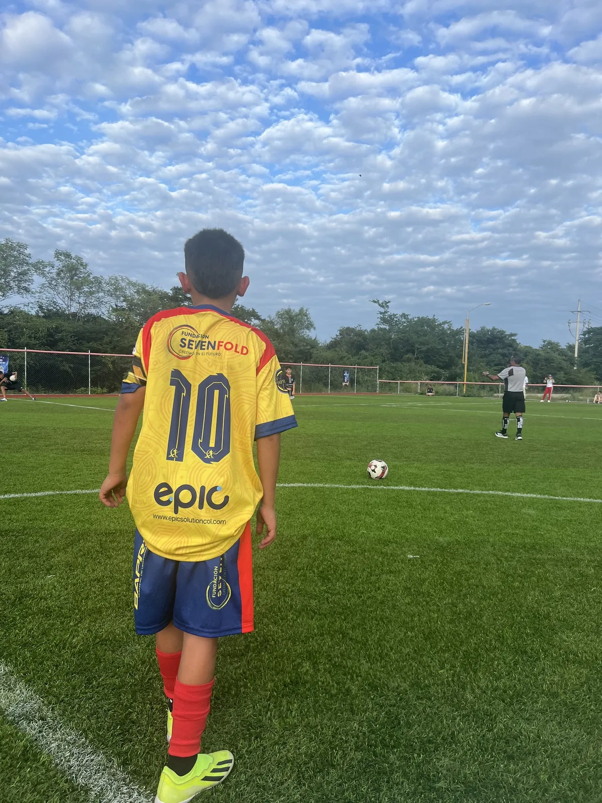

Un año a su lado
Apadrina un talento
Acompaña durante un año el camino de un niño o un joven: su entrenamiento y su uniforme, el transporte y la alimentación en cada jornada, y el viaje cuando le toque competir.
Mientras tanto, te contamos cómo avanza.
Quiero apadrinar